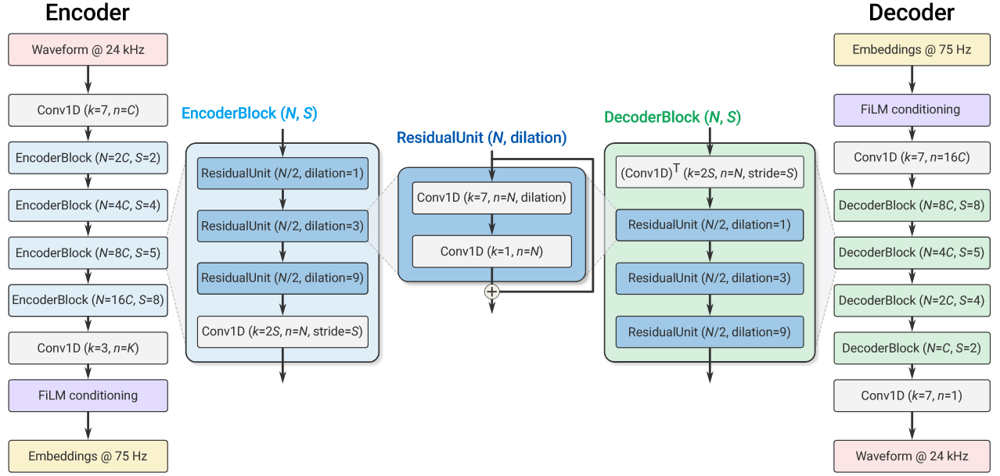
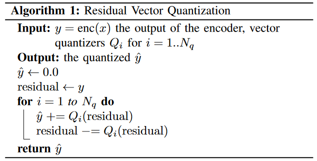
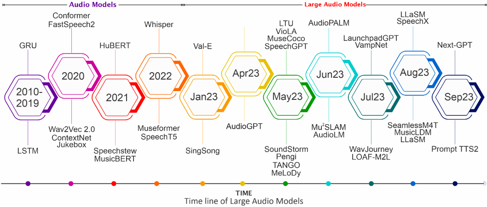

1. Towards audio language modeling - an overview
缘起压缩传数据，后来这种离散化连续语音音频很适用于语音语言模型。
SoundStream为万恶之源。
Ⅰ. SoundStream
(1) 模型
编码器——将raw audio映射到嵌入序列
量化器——用一组有限码本的矢量和代替每个嵌入
解码器——从量化嵌入产生有损的重建

所有卷积均为因果卷积
训练和离线推理只对过去padding，流式推理不使用padding
膨胀卷积（扩张卷积，空洞卷积）含于每个残差块，间隔采样
跨步卷积
每次下采样channel都乘2，最后的Conv1D将维度限制为D
使用ELU激活函数，不进行任何的归一化
FiLM(feature-wise Linear Modulation) conditioning，一种调节机制。

量化器的输出用bps表达。采样率为24000的话，经过编码器的处理后被压缩为1/320——75，相当于每秒75个采样点。那么如果针对于6000bps而言，6000 bps / 75 HZ = 80 bit。那么需要存2^80个矢量的码本，太大太不可行。
多个量化器进行残差分摊，分摊针对的是bit，那么每个量化器只需要2^(80/8)=1024个矢量的码本。
量化算法来源于VQ-VAE-2，额外用到k-means进行初始化，码本向量每用到随机替换。
(2) 训练

两种判别器
Ⅱ. EnCodec
Ⅲ. AudioDec
Ⅳ. AcademicCodec
Ⅴ. SoundStorm
Ⅵ. DAC
Ⅶ. SpeechTokenizer
Ⅷ. FuncCodec
A. AudioLM
B. AudioGen
C. VALL-E
D. MusicLM
E. VALL-E X
F. VioLA
G. MusicGen
H. AudioPaLM
I. SpeechX
J. LauraGPT
K. UniAudioS
2. Sparks of Large Audio Models: A Survey and Outlook
